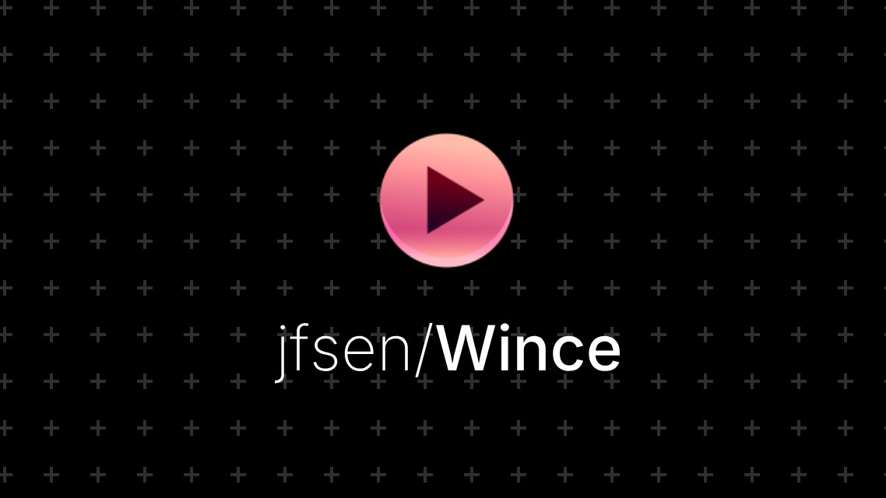
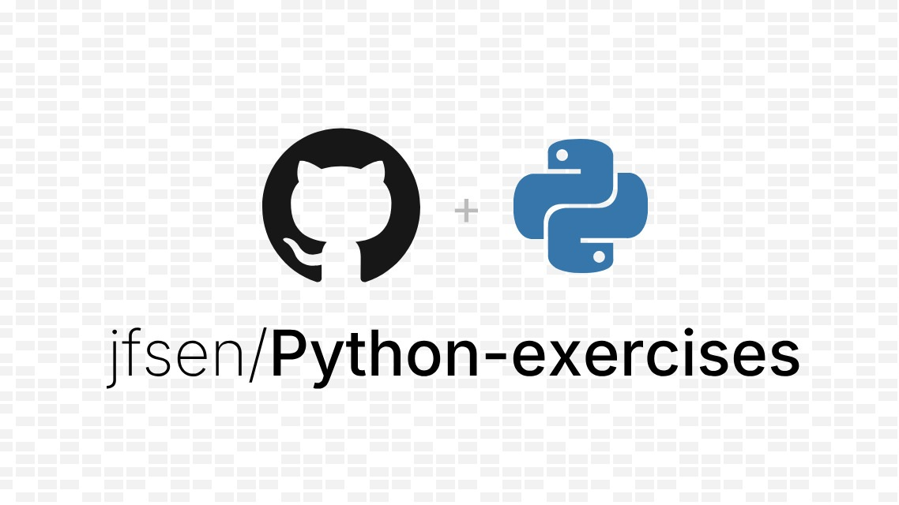
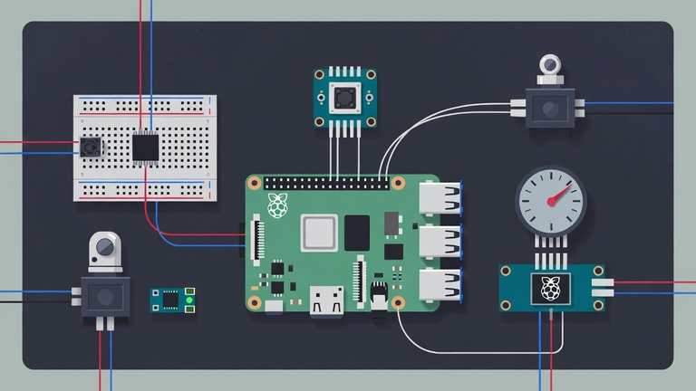
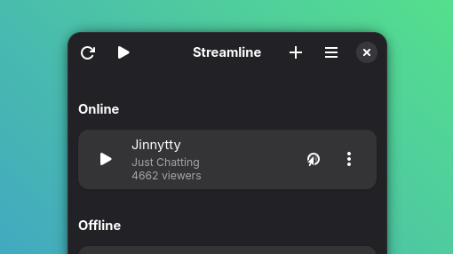
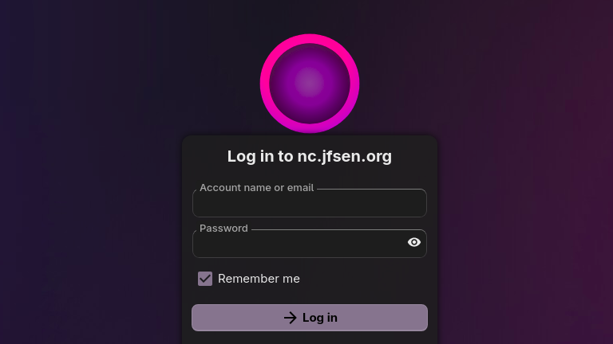
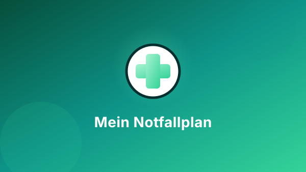
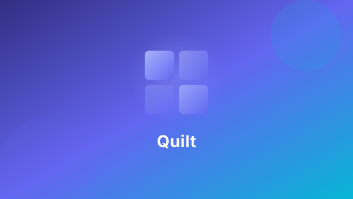
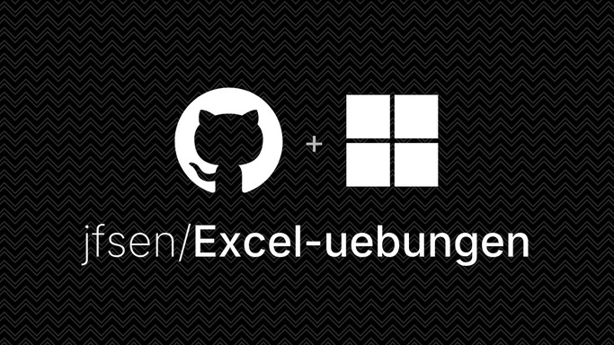

My first GUI project on my Python journey. Written as a frontend for the bash script "wtwitch" I chose tkinter as the Python-native toolkit. The program allows the user to watch live streams in a local media player.

My learning progress in Python - solved exercises, small scripts, challenges from books/courses, and growing coding habits.

My latest hobby project is to deepen my programming knowledge by tinkering with a sensor kit for my Raspberry Pi. Includes breadboards, displays, electric motors and all the sensors one might need for a weather station or motion detector.

Started as an AI-aided reimplementation of Wince in Libadwaita. Calls directly to the Twitch API and fits well with the GNOME desktop for Linux.

I run various services like Nextcloud as Docker containers on my own Ubuntu server. Secured with fail2ban, a reverse proxy and other measures, it's an exercise in network security.

A small digital companion for your mental health — a web app to keep track of what helps you in acute crises: reasons to keep going, calming thoughts, important contacts, and breathing exercises. Everything runs entirely in your browser, nothing leaves your device.

Create beautiful image collages right in your browser. Quilt is a single-file, zero-dependency HTML application that lets you arrange images into custom-sized collages with multiple layout algorithms, interactive cropping, and high-resolution export.

As part of a class on Microsoft Office, I refreshed my knowledge on the basics and delved into more advanced exercises for Excel spreadsheets.